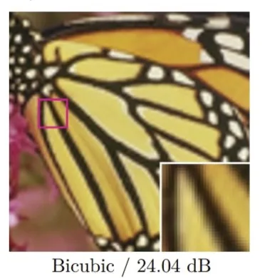

计算机视觉 · 第 2 章 图像处理基础
2.14 图像超分辨率重建
上一节的插值是把已有的像素按规则铺开，放大的倍数一高，图像就只剩模糊的轮廓。这一节换成另一个思路：让模型从数据里学会「细节通常长什么样」，再把丢掉的高频信息补回来，这就是图像超分辨率重建。课件用一页把这条线索立了起来——先是用一组「vs.」对比摆出重建效果，然后点出这条路线上的开山之作 SRCNN。
1. 超分辨率重建要解决什么问题
图像超分辨率重建（super-resolution，SR）要解决的是：给定一幅低分辨率图像，重建出对应的高分辨率图像。这里的目标不是把画面撑大，而是让重建结果尽可能接近那幅「本来应该存在」的高分辨率图像。
这个问题的性质要特别注意：图像在变成低分辨率的过程中已经丢掉了高频信息，而这些信息在任何一个确定性的放大规则下都找不回来——同一个低分辨率像素，可能对应很多种不同的高分辨率细节。也就是说，重建任务没有唯一解，只能借助对自然图像的先验，从众多可能里挑出一个最合理的答案。
2. 插值放大与超分辨率重建的区别
上一节的三种插值有一个共同点：新增像素的灰度值完全由邻域里已有的采样值决定，公式是人写死的，不含任何从数据里学来的知识。它能做的是把图像撑大，却撑不出原本不存在的高频内容，所以放大倍数一旦变大，结果就趋向模糊。
超分辨率重建换了一条路：把「低分辨率到高分辨率」当成一个可以学习的映射，用大量成对的高、低分辨率图像训练模型，让它记住自然图像的边缘与纹理通常是什么样子，重建时再把这些细节补回去。两者的区别可以概括成一句话——插值是「铺开」，重建是「补出来」。课件这一页正是用一组「vs.」的对比把这个差别摆出来的。

3. 开山之作：SRCNN
课件在这一页点明了这条路线上的开山之作：SRCNN（Super-Resolution Convolutional Neural Network，超分辨率卷积神经网络）。课件也给出了它的项目主页：http://mmlab.ie.cuhk.edu.hk/projects/SRCNN.html。
称它为「开山之作」，是因为它第一个把卷积神经网络用到超分辨率重建这个任务上：补细节这件事不再由人写死的插值规则决定，而是由数据训练出来的网络来完成。上一节的双三次插值虽然用到了 16 个采样点，是三种插值里最讲究的一种，但它终究只能把已有像素铺开；有了可学习的模型，重建才第一次有机会真正补回丢失的内容。
本节小结
- 超分辨率重建要解决的问题是：由低分辨率图像恢复高分辨率图像。由于高频信息已经丢失、答案不唯一，只能依靠对自然图像的先验去推断最合理的结果。
- 它与插值放大的区别在于知识的来源：插值的公式由人写定，只把已有像素铺开，放大倍数一大就模糊；重建把「低分辨率到高分辨率」当作可学习的映射，用数据训练出的模型补出细节。
- 课件给出的开山之作是 SRCNN（Super-Resolution Convolutional Neural Network），它第一次把卷积神经网络用于超分辨率重建，项目主页为 http://mmlab.ie.cuhk.edu.hk/projects/SRCNN.html。